"The Christian resolve to find the world evil and ugly, has made the world evil and ugly."
- Friedrich Nietzsche
Today, the Christian Church does not have the power it once had, yet, we have witnessed the Christian abuses of children, child rape, molestation and other vile acts that reveal the true nature of many Christians and the effects their "God" has upon his followers. The pedophilia scandals are just a small sample of what Christians are capable of.
This is due to the evil energy they tie into. "God" and the "Devil" are backwards! This can be plainly seen in the Old Testament where that "God" of Christianity was "a Murderer and a Liar from the beginning."
Years ago, when the Christian church had complete control over government, human life and spirit, we can see from the inquisition, just how sick these people are and just what lengths they will go to get you to accept "Jesus." Just as is seen in the numerous Christian abuses of children today, years ago, with the Inquisition, girls as young as nine and boys as young as ten were tried for witchcraft. Children much younger were tortured to extract testimony against their parents.¹ Children were then flogged while they watched their parents burn.
The Inquisition was early communism. The Catholic Church was the NKVD and KGB of the Middle Ages. For more detailed information, read The Gulag Archipelago by Aleksandr Solzhenitsyn. The Inquisition and communism, both Jewish programs are both nearly identical systems of mass murder, torture, and enslaving the masses.
"Christianity and communism are very close spiritually and ideologically. This is a fairly well known concept that has been adopted by various thinkers, from Thomas More to Lev Tolstoy. Few people know that the world's first socialist state was established in Paraguay and was based on the ideas of Catholic Jesuits before Marx created his teachings."
"The "Society of Jesus" - the Jesuit religious order - in the Catholic Church was roughly equivalent to the KGB in the Soviet Union."
Above quotes taken from "Pravda" [The main Communist Party Newspaper and leading newspaper of the former Soviet Union] From the article: Is there any difference between Christianity and Communism? 30/04/2013
Truth be known, nearly all of the inquisitors and high-ranking Catholic clergy were Jews.
A documented case in the Silesian town of Neisse reveals a huge oven was constructed, which over a ten year period, more than a thousand "condemned witches, some as young as two years old" were roasted alive.² Many victims were also extremely old, some in their 80's. This made no difference to the church.
The Christian Church murdered, tortured, mutilated and destroyed millions and millions of lives both directly through the Inquisition and indirectly through all of the wars they incited. The damage and destruction this foul religion has perpetrated against humanity is almost beyond comprehension. Most people aren't even aware of the facts. Between the years of 1450-1600, the Christian Church was responsible for the torture and burning of some 30,000 alleged "witches."³
During the reign of the Roman Emperor Constantine CE 306-337 the doctrines of the Christian church were regarded as the foundation of law.4 Heretics [persons who opposed church teachings, or who were even accused of such] were sought out, tortured and eventually murdered. Heresy was an offense against the State as well as the Church. For hundreds of years, civil rulers tried to stamp out all heresy.
As early as CE 430, the Church leaders declared heresy punishable by death. In CE 906, "The Canon Episcopi" was the first Church body to expressly forbid the use of witchcraft.5 Before the Inquisition was fully underway, the Church accepted heretics back into the fold, under terms it considered reasonable. The following is an example:
For three Sundays, the heretic was stripped to the waist and whipped from the entrance of the town/village all the way to the church door. He/she was to permanently deny him/herself meat, eggs, and cheese except on Easter, Pentecost and Xmas, when he/she is to eat of them as a sign of his/her penance. For twenty days, twice a year he/she was to avoid fish and for three days in each week fish, wine and oil, fasting, if his/her health would permit.
He/she was to wear monastic vestments with a small cross, sewn on each breast. He/she was to hear mass daily. Seven times a day, he/she was to recite the canonical hours and in addition, at Paternoster ten times each day and twenty times each night.
He/she was to observe total abstinence from sex. Every month he/she was to report to a priest who was to keep the heretic under close observation. He/she was to be segregated from the rest of the community.6
There is no precise date for the beginning of the Inquisition, most sources agree it manifested during the first six years of the reign of the Catholic Pope, Gregory IX, between 1227 and 1233. Pope Gregory IX who ruled from 1227-1241 is often referred to as the "Father of the Inquisition."
The Inquisition was a campaign of torture, mutilation, mass murder, and destruction of human life perpetrated by Christians and their Jewish root. The Church increased in power until it had total control over human life, both secular and religious.
The Vatican wasn't satisfied with the progress made by regional leaders in rooting out heresy. Pope Innocent III commissioned his own inquisitors who answered directly to him. Their authority was made official in the papal bull of March 25th, 1199.7 Innocent declared "anyone who attempted to construe a personal view of God which conflicted with the Church dogma must be burned without pity."8

In 1254, to ease the job of the inquisitors, Pope Innocent IV decreed that accusers could remain anonymous, preventing the victims from confronting them and defending themselves. Many churches had a chest where informants could slip written accusations against their neighbors. Three years later, he authorized and officially condoned torture as a method of extracting confessions of heresy. 9
| 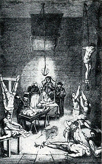 | 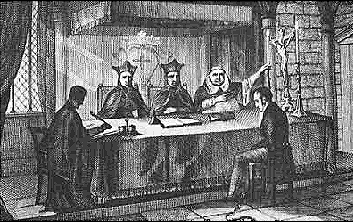 |
Victims were tortured in one room, and then, if they confessed, they were led away from the chamber into another room to confess to the inquisitors. This way it could be claimed the confessions were given without the use of force. The Inquisitional law replaced common law. Instead of innocent until proven guilty, it was guilty until proven innocent.
Inquisitors grew very rich, accepting bribes and fines from the wealthy who paid to avoid being prosecuted. The wealthy were prime targets for the church who confiscated their property, land and everything they had for generations. The Inquisition took over all of the victims' possessions upon accusation. There was very little if any chance of proving one's self innocent, so this is one way the Catholic Church grew very wealthy. Pope Innocent stated that since "God" punished children for the sins of their parents, they had no right to be legal heirs to the property of their parents. Unless children came forth freely to denounce their parents, they were left penniless. Inquisitors even accused the dead of heresy, in some cases, as much as seventy years after their death. They exhumed and burned the victim's bones and confiscated all property from their heirs, leaving them with nothing. 10
The actions of the inquisitors had devastating effects on the economy that left entire communities totally impoverished while the church glutted with wealth. They also crippled the economy by holding certain professions suspect. Inquisitors believed the printed word to be a threat to the church and interfered with the communication brought about by the invention of the printing press in the 15th century. Maps, cartographers, traveling merchants and traders were all placed under intense suspicion; a threat to the church.
Although the church had begun murdering people it deemed heretics in the 4th century and again in 1022 at Orléan, papal statutes of 1231 insisted heretics suffer death by fire. Burning people to death prevented the spilling of blood. John 15:6 "If a man abide not in me, he is cast forth as a branch, and is withered; and men gather them, and cast them into the fire, and they are burned."
The pedophilia witnessed today is just a small example of the insanity and the twisted, warped minds of most Christians and where any power that they obtain leads to.
The Witch hunts, 1450-1750 were what R. H. Robbins [The Encyclopedia of Witchcraft and Demonology] called "the shocking nightmare, the foulest crime and deepest shame of western civilization." In this 300-year period, the church stepped up the mass murder and systematic torture of innocent human beings. Torturers were allowed as much time as they needed to torture their victims. Most courts demanded that prior to the torture, the victim be thoroughly shaved, claiming that any Demon left undetected in the victim's body hair might intervene to deaden the pain that the torturers inflicted or answer for the victim.11
Doctors would be in attendance if it seemed the victim might die from the torture. The victim would then be allowed to recover a little before more torture was applied. If the victim died during the torture, inquisitors claimed the Devil intervened with the purpose of sparing the victim further pain or preventing them from revealing his secrets.12 Those who fainted had vinegar poured into their nostrils to revive them. The victim's families were required under law to reimburse the courts for the costs of torture. Entire estates were seized by the church. Priests blessed the torture instruments prior to their being used. Certain devices were employed to inflict the maximum pain; indisputable evidence of the sick Christian mind:
Judas Cradle
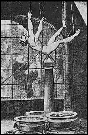
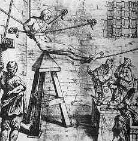
The victim was pulled up by a rope or chain and then lowered to the point. The torturer controlled the pressure by attaching weights to the victim or rocking or raising and dropping the victim from various heights.
| Brodequin [The Boots]
The brodequin was used to crush the legs by tightening the device by hand, or using a mallet for knocking in the wedges to smash the bones until the bone marrow spurted out. People who passed out were further condemned as the losing of consciousness to be a trick from the Devil in order to escape pain. | 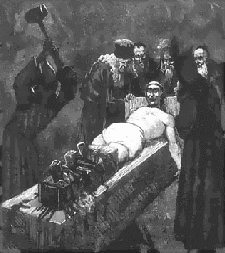 |
| Burning the feet. Oil, lard and grease were applied to the feet before roasting them over a fire. A screen was used to control or increase the pain as exposure to the fire was applied on and off for maximum suffering. Also, as a variation, some victims were forced to wear large leather or metal boots into which boiling water or molten lead was poured. | 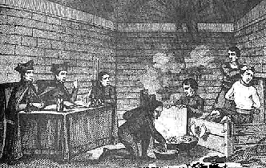 |
Hanging and the Strappado
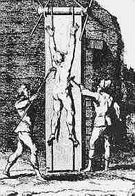
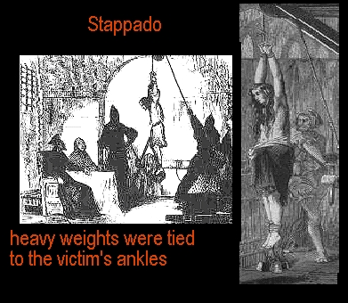
The victim's hands were bound behind the back. They were then yanked up to the ceiling of the torture chamber by a pulley and a rope. Dislocation ensued. Christians preferred this method, as it left no visible marks of torture. Heavy weights were often strapped to the victim to increase the pain and suffering.
Squassation was a more extreme form of the torture. This method entailed strapping weights as much as hundreds of pounds, pulling limbs from their sockets. Following this, the Christian inquisitor would quickly release the rope so they would fall towards the floor. At the last second, the Christian inquisitioner would again yank the rope. This dislocated virtually every bone in the victim's body. Four applications were considered enough to kill even the strongest of victims.
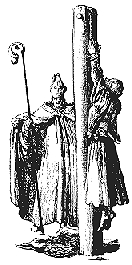
Many were hung upsidedown as well until strangulation ensued.
Heretic's Fork
| 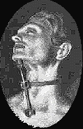 | 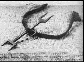 |
This device was often used to silence the victim on the way to the burning stake, so they could not reveal what had occurred in the torture chamber or defend themselves in any way.
Ripping the flesh
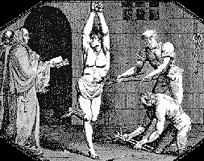
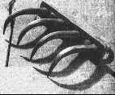
Christian clergy delighted in the tearing and ripping of the flesh. The Catholic church learned a human being could live until the skin was peeled down to the waist when skinned alive. Often, the rippers were heated to red hot and used on women's breasts and in the genitalia of both sexes.
Breast Rippers
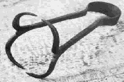
The Iron Torture Chair was studded with spikes. The victim was strapped in nude and a fire was lit beneath the chair. Heavy objects were also used. They were placed upon the victim to increase the pain of the spikes. Blows with mallets were also inflicted. Often, other torturous devices were applied with the chair such as the flesh ripping pincers, shown above and leg crushing vices.
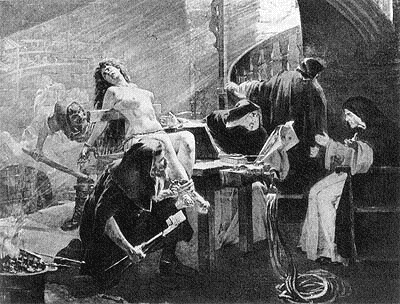
Skull Crusher
This one speaks for itself. Christian clergy preferred this device because it did not leave visible marks, unless the skull was completely crushed, which happened.
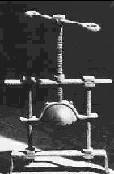
The Rack
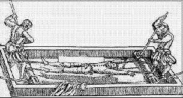
The Rack, aka the Ladder was another device that was used extensively. The procedure was to place the nude or near nude victim horizontally on the ladder or rack. Ropes were used to bind the arms and legs like a tourniquet. The knot could be steadily twisted to draw tight the ropes and stretch the victim to where the muscles and ligaments tore and bones broke. Often, heavy objects were placed upon the victim to increase the pain. This was considered by the church to be "one of the milder forms of torture."
The Wheel
| 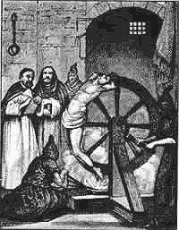 | The nude victim, was stretched out, lying face downward on the ground or on the execution dock, with his or her arms and legs spread, and tied to stakes or iron rings. Wooden crosspieces were placed under the wrists, elbows, ankles, knees and hips. The inquisitor then smashed limb after limb and joint after joint, including the shoulders and hips, with the iron-tyred edge of the wheel, taking care not to bring about the death of the victim. There were splinters of smashed bones, blood spurted everywhere, and the victim's entire skeleton was crushed and smashed. Thereafter the shattered limbs were “braided” into the spokes of the large wheel. |
| The Thumbscrew
The thumbscrew was a device where the victim's thumbs were placed and systematically crushed. Similar devices were used on the toes. Thumbscrews were often applied at the same time as the strappado and other torture devices to inflict more pain. | 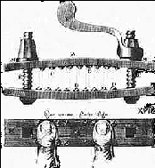 |
| The Water Torture
The victim was stripped and bound to a bench or table and a funnel was inserted and pressed down into his throat. Water was poured into the funnel in jugs full with his/her nose being pinched, forcing him/her to swallow. After this was repeated enough times to where the victim's stomach was almost to burst, the bench or table was then tilted, with the victim's head pointing to the floor. The water in the stomach put painful pressure on the victim's lungs and heart. There was not only the incredible pain with this, but also, the feeling of suffocation. Inquisitors would also beat upon the stomach with mallets to the point of internal rupture. In another variation, the victim was forced to swallow large quantities of water together with lengths of knotted cord. The cords were then violently yanked from the victim's mouth resulting in disemboweling. | 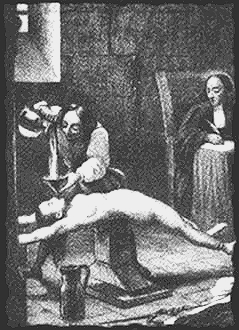 |
| The Iron Maiden also known as the "Virgin Mary" Covering the front side of this device was a statue of the Virgin Mary, inside were spikes, sharp knives or nails. Levers would move the arms of the statue, crushing the victim against the knives and nails. | 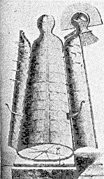 |
Other devices and methods:
- Forced feeding of overly salted foods that resulted in extreme thirst, then, the denial of water.
- Immersion in scalding water laced with lime.
- Yanking back and forth by 2 or more inquisitors with ropes attached to a spiked iron collar. This tore the flesh on the victim's neck. Variations used screws that could be tightened.
- The prayer stool. A spike board on which the victim was forced to kneel.
- Stocks which were fitted with iron spikes.
- Slowly roasting victims over fire.
- "Walking a Witch" entailed forcing a victim to walk back and forth for days on end until completely exhausted. A variation of this was having the victim sit cross legged upon a wooden stool, being deprived of movement or sleep. Some victims were as much as 80 years old.
- "Thrawing." Similar to the spiked iron collar, only a rope was tied tightly around the head and the victim was yanked back and forth.
- "Turkas." These were a variation of pincers used to pull out fingernails.
- Many were thrown in filthy dungeons with no light or human contact, in addition, often being chained or confined in the stocks.
- "Scoring above the Breath" the ancient belief that bleeding a witch above the mouth and nose would break a spell incited inquisitors to tear flesh, stick with needles and other instruments upon the victim's face.
| 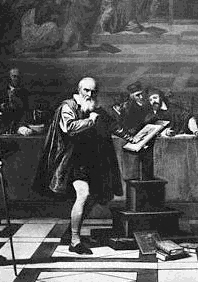 | Galileo Galilei, the famous Italian astronomer and physicist was one of the most noted victims of the Inquisition. A letter in which he attempted to demonstrate the Copernican theory, that the Earth is not the center of the universe, was forwarded by some of his enemies to the inquisitors in Rome. He was tried in 1633 and found guilty of heresy. He was forced to recant [publicly withdraw his statement] and was sentenced to life imprisonment under house arrest.
In 1979, Pope John Paul II declared that the Roman Catholic Church "may have been mistaken in condemning him," and he established a commission to study the case.13 In 1993, the Catholic Church "officially" pardoned Galileo. In other words, they forgave him for teaching that the planets revolve around the Sun, not the Earth. |
Loss of human life:
- Salzburg, Austria, 1677-1681 over 100 murdered.
- Basque region of the Pyrenees; 1608, Lawyer Pierre de Lancre was sent to the region to "root out and destroy those who worshipped Pagan Gods." Over 600 tortured and murdered.
- Witch judge Henri Boguet c. 1550-1619 sent some 600 victims to their deaths in Burgundy, many of them young children who were systematically tortured and then burned alive.
- A pregnant woman was burned alive and from the trauma, she gave birth before she died. The baby was tossed back into the flames.
- Swedish town of Mora, 1669, more than 300 murdered. Among them, 15 children. Thirty-six children between the ages of 9 and 15 were made to run the gauntlet and were beaten with rods upon their hands once a week for an entire year. Twenty of the youngest children, all under the age of 9, were whipped on their hands at the church door for 3 Sundays in succession. Many more were severely beaten for witchcraft offenses.
- In Scotland, under the rule of Oliver Cromwell, a total of 120 in a single month were murdered in 1661. Estimates of the total dead have been as high as 17,000 between 1563 and 1603.
- In Würzburg, Germany, the Chancellor wrote a graphic account in the year of 1629:
"...there are three hundred children of three or four years, who are said to have had intercourse with the Devil. I have seen children of seven put to death, and brave little scholars of ten, twelve, fourteen and fifteen years of age..."
Between the years of 1623 and 1633, some 900 "witches" were put to death throughout Würzburg. This was largely maintained by the Jesuits. - The Chronicler of Treves reported in 1586 that the entire female population of two villages was wiped out by inquisitors. Only two women were left alive.
- Noted cases included the Knights Templar, Joan of Arc who was chained by the neck, hands and feet and locked in a cramped iron cage, Galileo, who stated that the Earth revolved around the Sun and was not the center of the universe as the church taught(See above).
The above accounts were taken from Cassel Dictionary of Witchcraft by David Pickering.
On Sunday, March 12th, 2002, the Pope John Paul II apologized for the "errors of his church for the last 2000 years."
REFERENCES:
¹The Dark Side of Christian History by Helen Ellerbe, page 124
²Cassel Dictionary of Witchcraft by David Pickering, article on "Germany", page 108
³Cassel Dictionary of Witchcraft by David Pickering, article on "Inquisition", page 146
4 World Book Encyclopedia article on "Inquisition."
©1989
5 Wizards and Sorcerers by Tom Ogden, article on "Inqusition."
6 The Dark Side of Christian History by Helen Ellerbe, page 77
7Wizards and Sorcerers by Tom Ogden, article on "Inquisition."
8The Dark Side of Christian History by Helen Ellerbe, page 77
9Wizards and Sorcerers by Tom Ogden
10The Dark Side of Christian History by Helen Ellerbe, page 80
11Cassel Dictionary of Witchcraft by David Pickering article on "Torture."
12Cassel Dictionary of Witchcraft by David Pickering, article on "torture."
13World Book Encyclopedia article on "Galileo."
©1989